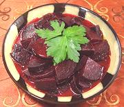

|
Beets VinaigretteRussia - Vinegret iz Svyokly | ||||
| Makes: Effort: Sched: DoAhead: |
6 app * 1 hr Best |
A very nice beety appetizer sure to satisfy any beet enthusiast. These are much less sharp than from a typical pickled beet recipe and are ready much sooner. | |||
|
2 ---- 1/2 1/2 2 1/2 1/4 ---- |
# --- c c t t t --- |
Beets -- Dressing Olive Oil ExtV Wine Vinegar, red Mustard (1) Salt Pepper -- Garnish Parsley Leaves |
Make - (1 hr - 15 min work)
|